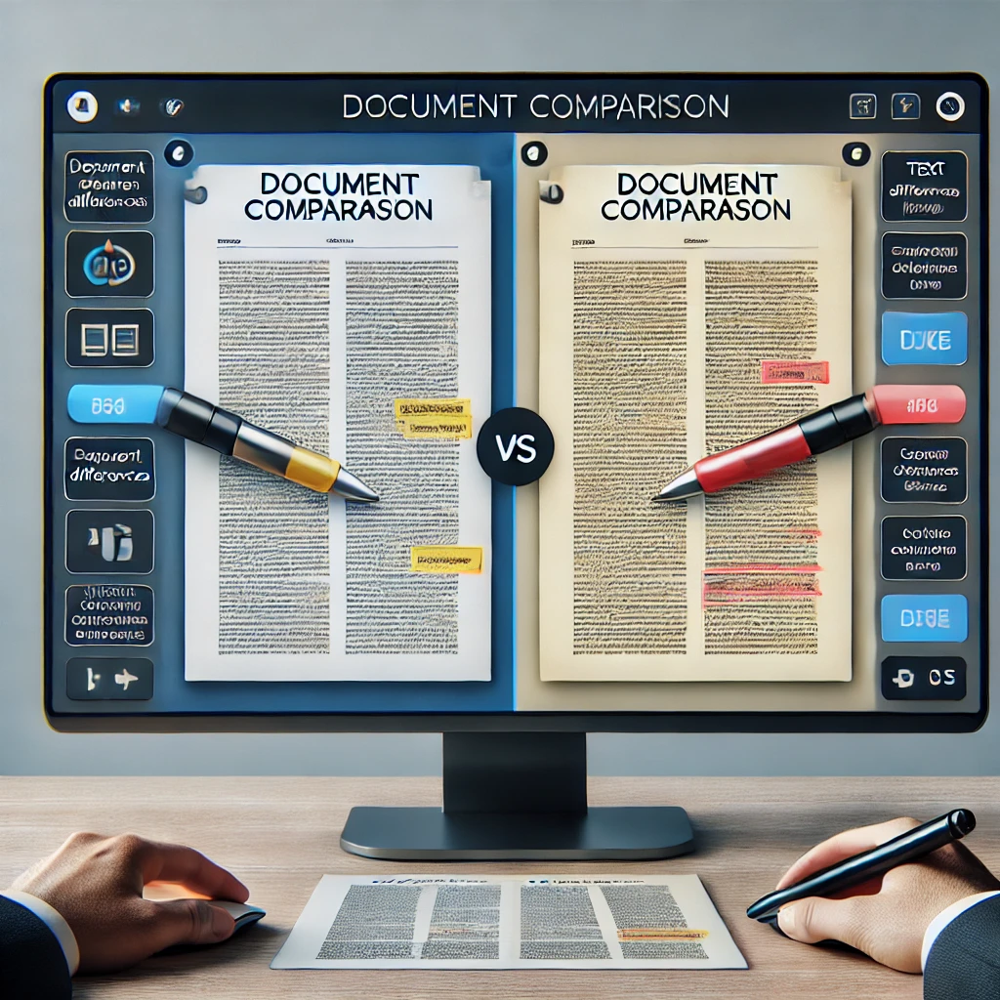

Welcome to Data Driven Insurance
Entdecken Sie unten verschiedene Use Cases von DDI:

Use Case 1: Dokument Vergleich
In diesem Szenario wird gezeigt, wie man zwei Dokumente vergleicht und Unterschiede mithilfe von KI hervorhebt.
Zum Use Case 1Use Case 2: Datenbank Befragung
Dieses Szenario zeigt, wie man mit einer Datenbank interagiert, um Daten abzufragen.
Zum Use Case 2Use Case 3: Einreichung Chatbot
Erfahren Sie, wie man einen Chatbot erstellt, der Benutzereingaben verarbeitet und entsprechend reagiert.
Zum Use Case 3
Use Case 4: Chatbots
In diesem Szenario lernen Sie, wie Sie Chatbots erstellen und verwalten, um Benutzerinteraktionen zu automatisieren.
Zum Use Case 4